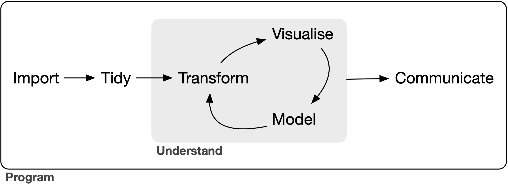

In het voorwoord werd al geschreven dat R zowel een applicatie als een programmeertaal is. Dat klopt, al is dat nog niet het hele verhaal: naast de applicatie is er ook de applicatie “RStudio”. De tweede is in principe optioneel, maar maakt het leven heel wat makkelijker!
Een blik op de schermen
Waar zit het verschil dan juist? Een blik “op de schermen” die typisch bij beide applicaties horen, is vermoedelijk veelzeggend. Eerst kijken we naar de gewone . In dit concrete geval bestaat het scherm uit twee delen: bovenaan een script-bestand, onderaan de console. Doorgaans wordt code geschreven in het script, en nadien met een druk op de knop doorgegeven aan de console. De console voert de code uit en geeft output terug.
RStudio, daarentegen, ziet er heel wat complexer uit. In de meeste gevallen bestaat het uit vier kwadranten (indien een script-bestand geopend is). In onderstaand voorbeeld zijn de kwadranten aan de linkerkant vergelijkbaar met de gewone , terwijl de kwadranten aan de rechterkant volledig nieuw zijn. Die kwadranten aan de rechterkant tonen -in dit geval- de informatie die in het werkgeheugen zit (bovenaan) en het resultaat van het script (onderaan).
Merk bovendien op dat elk kwadrant ook nog eens uit het verschillende tabbladen bestaat, en er dus met enkele muisklikken heel wat extra informatie in één venster raadpleegbaar is. De kern van het (schrijf)werk blijft gebeuren aan de hand van scripts (linksboven) om in interactie te gaan met de console of terminal (linksonder), terwijl alle overige informatie gericht is op het faciliteren van dat werk. In die zin is RStudio een “Integrated Development Environment” of IDE, waar de gewone slechts één -zij het een fundamenteel- onderdeel van vormt.
Aangezien onderdeel is van RStudio, moeten beide applicaties gedownload en geïnstalleerd worden. Hoewel wij, de gebruikers, enkel aan de slag gaan met/in RStudio, spreekt RStudio “achter de schermen” aan voor het uitvoeren van de code. Een analogie van Ismay en Kim (2019) die wel eens wordt gebruikt, is die van een auto: is de motor, maar het is in combinatie met allerhande hulpsystemen van RStudio (zoals spiegels, het navigatiesysteem en de snelheidsmeter van de auto) dat de chauffeur vlot op zijn/haar bestemming geraakt.
Eens zowel en RStudio geïnstalleerd staan, ben je dan vertrekkensklaar? Nog niet helemaal… Er zijn immers ook nog enkele “packages” te installeren. Een package of “code-pakket” omvat bijkomende functies, die niet standaard deel uitmaken van , maar door de community van gebruikers werden ontwikkeld1. Het installeren (en up-to-date houden) van een package kan je via de RStudio interface2 doen, ofwel kan je de console gebruiken. Bijvoorbeeld:
Via install.packages wordt een package gedownload en geïnstalleerd. Merk op dat de package-naam met aanhalingstekens genoteerd staat.
2
Het update.packages laat toe om een specifiek package up-to-date te brengen. Het is bovendien mogelijk om voor meerdere packages tegelijkertijd te vragen om het update-proces (maar ook het installatie-proces) door te voeren. In dat geval dienen we de reeks af te bakenen door middel van c(). De “c” staat voor “concatentate”, of -in het Nederlands- “concateneren”.
Het installatieproces van een package dient in principe slechts één keer te gebeuren: door het doorlopen van het proces, worden de nodige bestanden aangemaakt op de lokale schijf van de computer, en die blijven daar ook staan, tenzij remove.packages() wordt gebruikt. Wat er wel elke keer dient te gebeuren bij een nieuwe sessie (dus wanneer RStudio, of de computer als geheel, afgesloten is geweest), is het laden van de packages die voor die sessie nodig zijn. Welke packages nodig zijn, hangt dan weer af van de extra functies die in het script worden gebruikt.
Tip
Werk rechtstreeks in de console (in plaats van in het script-bestand) voor het installeren/updaten van packages. Wanneer functies als install.packages()ergens in het script staan, worden die processen immers nodeloos herhaald telkens wanneer je een script laat lopen.
Het verschil tussen de installatie en het inladen van packages kunnen we verduidelijken aan de hand van de vergelijking met een fysieke bibliotheek. Het installeren van een package, is als het aankopen van een nieuw boek, dat ergens in de bibliotheek een plaatsje in een rek krijgt. Om de inhoud van het boek te gebruiken, dien je het echter uit het rek te halen, eventueel mee te nemen naar een tafeltje waar je aan het werk bent, en het open te slaan. Die stappen van het gaan halen van een boek om bepaalde passages te kunnen raadplegen, is een analogie voor het laden van een package. Aan het einde van de werksessie in de bibliotheek, belanden de boeken uiteindelijk weer allemaal op het rek, tot ze opnieuw nodig zijn. Om vlot te werken, is het ook aangewezen om de tafel niet te overladen met boeken (packages), waarvan je niet zeker weet of je de inhoud (functies) wel nodig hebt. Af ten toe is het ook goed om van de boeken (packages) eens nieuwe edities in het rek te laten zetten (updaten), zeker wanneer de boeken naar elkaars inhoud verwijzen, en dus afhankelijk zijn van elkaar (dependencies).
Maar hoe doe je dat dan, een package van het spreekwoordelijke rek halen? Hoewel dat logisch zou zijn, is het niet “load.packages()”, maar wel:
Merk op dat in dit geval de naam van het package zonder aanhalingstekens mag genoteerd worden.
2
Wanneer meerdere packages nodig zijn, wat vaak het geval is, kan je deze niet in één library()-commando stoppen!
Het dubbel dubbelpunt
Is het laden van een volledig package via library() de enige manier om een specifieke functie op te roepen? Neen! Het is mogelijk om in een code-ketting een bepaalde functie te laten voorafgaan door de package-naam en ::. Bijvoorbeeld:
Gangbare manier van werken: het package laden, zodat nadien de extra functies rechtstreeks aangesproken kunnen worden.
2
Alternatieve manier van werken: het package niet laden, en bij elk gebruik van een extra functie moeten specificeren wat het ruimere package is.
Werken aan de hand van <package>::<functie> in de analogie van de bibliotheek: het boek wordt niet op de werktafel gelegd, maar je vraagt iemand om naar het rek te gaan om een passage over een bepaald onderwerp te citeren. De persoon in kwestie zal dan de instructie moeten krijgen in welk boek (package) die passage te vinden is. Door de band genomen is het handiger om het package gewoon te laden van zodra je het nodig hebt (library()), maar desgewenst is het dus mogelijk om dat niet te doen, bijvoorbeeld wanneer het om een package gaat waarvan je één functie op één plaats in het script gebruikt, en je verder geen verwarring wil hebben met andere functies in dat package. Of met andere woorden: de passage is maar één keer nodig, moeten we het boek dan uit het rek halen?
Een andere situatie om <package>::<functie> te gebruiken, is het scenario dat er twee of meer packages geladen zijn, die functies hebben met dezelfde naam. In onze analogie liggen er dus twee of meer boeken op de werktafel, die gelijkaardige passages bevatten. Wanneer die dubbelzinnige functienaam wordt gebruikt als onderdeel van de code, ontstaat er dus ambiguïteit voor de menselijke schrijver (en lezer) van het script, die kan worden opgelost door vermelding van het ruimere package. Merk op dat er voor de computer géén ambiguïteit is: de variant van het laatst geladen package wordt genomen, hoewel dat niet noodzakelijk de bedoeling van de schrijver is3.
Tip
Plaats alle library()-code bovenaan het script, zodat de lezer meteen kan zien welke packages geïnstalleerd dienen te worden. Voor het geval functies worden gebruikt zonder dat het package als geheel wordt geladen, kan het om die reden handig zijn om het package toch bovenaan te vermelden, maar dan voorafgegaan door een #. Lijnen die worden voorafgegaan door een # worden immers niet als code geïnterpreteerd door , en kunnen bijgevolg worden gebruikt om notities te maken.
Als de applicaties ( en RStudio), en eventueel wat extra packages, werden gedownload en geïnstalleerd, zijn we dan klaar om in data te duiken? Bijna. We moeten RStudio immers de weg wijzen naar de plaats op de computer waar (onderdelen van) het script uitgevoerd moeten worden (met name wanneer er sprake is van input of output). Om de analogie van de fysieke bibliotheek helemaal rond te maken, kunnen we het tafeltje, waar we enkele boeken samenbrengen om ons te helpen bij ons werk, linken aan de “working directory” of werkruimte. Het gaat dan meer bepaald over het aanduiden van een specifieke locatie (beschreven in het bestand-pad, bijvoorbeeld: “C:/Users/jouwgebruikersnaam/documents”), waar de werktafel (map op de computer) zich bevindt.
De werkruimte gebruiken
Werken met RStudio betekent in de meeste gevallen dat er informatie (vooral gestructureerde data), wordt geïmporteerd en verwerkt, om vervolgens één of ander product (een opgeschoond en verrijkt excel-bestand, een afbeelding van een grafiek, een geïntegreerd rapport in html-formaat,…) te exporteren.
Het meest eenvoudige scenario voor het gebruiken van RStudio in het kader van een specifieke analyse, is het centraliseren van alle input en output in (een sub-map van) de map waar ook één of meerdere scripts zitten, die de verwerking uitvoeren (van import tot export). Er is in RStudio voor dat scenario ook functionaliteit voorzien om die map expliciet als (basis van een) project aan te duiden, waardoor die automatisch als de werkruimte wordt beschouwd4. Wanneer er data moet worden ingelezen, of een product moet worden geëxporteerd, hoeft de data-analist zich dus enkel zorgen te maken over het aanduiden van de juiste sub-mappen binnen de projectmap. Met andere woorden: de context buiten de projectmap, onder andere de locatie van de map op de computer van de data-analist, is niet langer relevant. Het voordeel is dat een projectmap als geheel kan uitgewisseld worden, zonder dat de links in de scripts naar import-bestanden en export-locaties gebroken wordt. Het nadeel is dat alles dat buiten de projectmap ligt ook niet toegankelijk is. Helaas betekent dat ook meteen dat het niet compatibel is met de huidige manier van (samen)werken van Team Data & Analyse.
De organisatie van SharePoint
Vanuit technisch oogpunt is de werking van Team Data & Analyse ingebed in SharePoint (cf. onderstaande afbeelding), terwijl er vanuit organisatorisch oogpunt voornamelijk projectmatig wordt gewerkt, waar er uitgewisseld wordt met collega’s van buiten de cel Stedelijk Beleid. In de praktijk wordt voor iedere duidelijk afgelijnde vraag een nieuwe projectmap aangemaakt, waar de nodige data voor dat project zoveel als mogelijk wordt verzameld, samen met de scripts en de output die wordt gegenereerd.
Echter: voor heel wat vragen is er aanvullend op de informatie in de projectmap ook informatie nodig die elders op Sharepoint moet staan. Twee typische voorbeelden van die informatie zijn:
Cartografische gegevens (meestal shapefiles)
Deze gegevens zijn nodig telkens wanneer kaarten deel uitmaken van de gevraagde output. Momenteel worden verschillende cartografische gegevens, relevante documentatie en links naar bronnen in een eigen bibliotheek bijgehouden. Indien de projectmappen ook vanuit RStudio als project zouden behandeld moeten worden, dan zouden we genoodzaakt zijn om delen van de cartografische gegevens voor iedere vraag opnieuw te kopiëren. Dat zou nodeloos gebruik van het geheugen zijn5, maar ook van tijd: indien een nieuwe versie van de cartografische gegevens wordt gedownload, zou dit ook opnieuw naar alle (lopende) projecten moeten worden gekopieerd!
Gevoelige gegevens van andere diensten
Deze gegevens worden ook ondergebracht in een aparte bibliotheek, waar een veel beperktere groep collega’s standaard toegang toe heeft (enkel Team Data & Analyse, eerder dan de cel Stedelijk Beleid als geheel). Binnen de bibliotheek worden aparte mappen aangemaakt, waar heel gericht extra toegangen worden gegeven aan collega’s verantwoordelijk voor de gevoelige gegevens, zodat zij daar een kopie voor analyse kunnen voorzien. Per definitie gaat het om informatie die in de originele versie niet naar een projectmap mag gekopieerd worden, maar wel in verwerkte(re) versie gebruikt moet kunnen worden in projecten. Door ons in de projectmappen niet te beperken tot data binnen die map, kunnen we dus veel flexibeler aan het werk in de scripts, en blijft alle verwerking nodig voor een project, ook van de gevoelige data elders, binnen de projectmap staan6.
OneDrive en de verkenner
Hoe krijgen we data van SharePoint ingeladen in RStudio, dat lokaal op de harde schijf van de computer draait? Er zijn allicht meerdere mogelijkheden, maar de meest gemakkelijke is het synchroniseren van Sharepoint-bibliotheken naar de OneDrive. Dat wil zeggen dat de (project)mappen via de verkenner kunnen geopend worden, en dat ze ook een bestand-pad hebben dat we als werkruimte kunnen aanduiden in het script.
Het voordeel is dat (wijzigingen in) de producten van de verwerking (zoals een afbeelding met een kaart of grafiek) onmiddellijk beschikbaar zijn voor alle collega’s die tot de projectmap toegang hebben (gekregen). Het daaraan gekoppelde nadeel is dat diezelfde collega’s wijzigingen kunnen aanbrengen in de data (niet zelden excel-bestanden), die repercussies kunnen hebben op de scripts.
Een ander voordeel is dat collega’s die met (een kopie van) het script aan de slag willen gaan, slechts minimale wijzigingen moeten doen aan de code voor het aanduiden van de werkruimte, indien ze op dezelfde wijze de SharePoint-bibliotheken synchroniseren met hun OneDrive. De stukjes script in de volgende sectie maken dit heel concreet.
Belangrijk
Merk op dat deze documentatie gebruikt maakt van code-annotatie, via omcirkelde getallen die aan de rechterkant van een blokje code kunnen staan. Indien je met de computermuis ter hoogte van zo’n getal stil blijft staan, verschijnt wat extra tekst in een pop-up (vergelijkbaar met een voetnoot), die een onderdeel van de code toelicht. De specifieke lijnen code in het deel dat wordt toegelicht, worden bovendien ook gemarkeerd. Op die manier is er detail voor wie het nodig heeft, zonder dat het ruimte in beslag neemt.
Van map naar werkruimte
user <-"nvdber"setwd( stringr::str_c("C:/Users/", user, "/Vlaamse Gemeenschapscommissie/","DLA - Stedelijk Beleid & Data en Analyse - ","D&A Cartografische gegevens" ) )
1
Eerst en vooral maken we een object met de naam “user” aan, dat één waarde bevat: de gebruikersnaam van de persoon die op dat moment aan de slag wil met het script. Voor de auteur van deze documentatie is dat “nvdber”.
2
Met setwd() kunnen we via de console de Working Directory (werkruimte) aanduiden. Het argument is een string (een reeks karakters afgebakend met aanhalingstekens), die het pad naar de map omschrijft.
3
Met str_c() (uit het stringr-package) worden meerdere argumenten (opgesomd via komma’s) tot één string gecombineerd. Merk op dat die argumenten een expliciete string kunnen zijn, maar ook een string die achter een object zit, zoals user! Dat wil zeggen dat voor het gecombineerde resultaat niet “user” gaat genomen worden, maar de waarde die we de naam “user” hebben gegeven, namelijk “nvdber”.
De kern van deze manier van werken, is dat er voor gedeelde mappen die als werkruimte worden gebruikt in principe niets aan het pad moet veranderd worden, met uitzondering van de gebruikersnaam (tenzij de mappenstructuur wordt hernoemd, verplaatst of op een andere manier gewijzigd). Voor het gemak wordt het user-object dus ergens bovenaan het script gedefinieerd (ten laatste onmiddellijk na het laden van de packages), zodat de gebruiker het meteen ziet en het indien nodig kan aanpassen naar zijn/haar eigen gebruikersnaam.
Naast setwd(), met als argument het pad naar de map die als werkruimte dient opgevat te worden, is er ook getwd(), zonder verdere argumenten: hiermee wordt het pad naar de huidige werkruimte via de console getoond (in plaats van gewijzigd). De map die laatst werd aangeduid als werkruimte, en alle inhoud, kan integraal binnen RStudio worden geraadpleegd via het tabblad “Files” in het kwadrant rechts onderaan. Via het tandwiel in dat tabblad kan de werkruimte ook worden gewijzigd, maar dat wordt ten stelligste afgeraden, aangezien het dan verborgen blijft voor het script (en dus ook voor collega’s die van het script gebruik wensen te maken).
De lengte van het pad naar de werkruimte valt in bovenstaand geval nog relatief mee, maar dat hoeft natuurlijk niet altijd zo te zijn, zeker wanneer om welke reden dan ook aan de slag wordt gegaan met een werkruimte die ergens diep in een mappenstructuur zit7. In die gevallen is het goed om weten dat het pad via de verkenner kan gekopieerd worden (cf. onderstaande afbeelding), maar dat er dan wel op twee zaken moet worden gelet:
De schuine strepen staan in de verkenner (“\”) anders dan in -scripts (“/”), en moeten dus vervangen worden.
Onderdelen van het pad moeten mogelijks nog geparametriseerd worden (cf. supra: werken met een user-object).
Op dezelfde manier zou ook aan de slag kunnen worden gegaan met parameters voor de projectmap of de map met gevoelige data van andere diensten. Dat is niet strikt noodzakelijk, in die zin dat het geen impact heeft op het al dan niet werken van één script bij verschillende collega’s. Echter: het maakt wel meteen (bovenaan in het script) duidelijk welke specifieke mappen allemaal betrokken zijn in het script. Een bijkomend voordeel is dat er maar op één plaats moet gecorrigeerd worden, indien de naam van de map zou gewijzigd worden.
project <-"naam van de projectmap"gevoeligedata <-"naam van de map met gevoelige data"setwd( stringr::str_c("C:/Users/", user, "/Vlaamse Gemeenschapscommissie/","DLA - Stedelijk Beleid & Data en Analyse - ", "D&A Projecten/", project ) )setwd( stringr::str_c("C:/Users/", user,"/Vlaamse Gemeenschapscommissie/","DLA - Stedelijk Beleid & Data en Analyse - ","Gevoelige data andere diensten/", gevoeligedata ) )
Ordelijke projectmappen
Het kan geen kwaad om op voorhand goed na te denken over een ordelijke structuur van de projectmap, waar doorgaans de meeste bestanden gecentraliseerd zullen staan, aangezien dat gevolgen heeft voor het inlezen van de data. Een ordelijke structuur zit minimaal in de naamgeving, zoals in geval van de (hypothetische) projectmap A op onderstaande afbeelding. Dit is het meest eenvoudige scenario, typisch in gevallen waar de hoeveelheid input en output eerder beperkt is, en er naast Team Data & Analyse weinig of geen collega’s in de map aan de slag gaan. Omvat de analyse heel veel data- en/of output-bestanden kan omvatten, kan het handig zijn om met één submap-niveau te beginnen werken, zoals in projectmap B. Gaan heel veel collega’s actief aan de slag in de projectmap, dan kan het veiliger zijn om al het analysewerk van Team Data & Analyse in een aparte map te plaatsen, om voor een zekere afscheiding8 te zorgen van het vele andere materiaal dat in de map op het hoogste niveau kan zitten (cf. projectmap C).
Binnen projectmap C zou er nog een verdere opdeling in submappen mogelijk zijn volgens hetzelfde principe als in projectmap B, en misschien kan je nog andere varianten bedenken. Hoe er precies moet worden gestructureerd is tot op zekere hoogte een kwestie van persoonlijke voorkeur. Dat er een structuur is, is dus cruciaal, eerder dan wat die structuur precies inhoudt. Los van de structuur, is het aangewezen om een zekere consistentie te proberen hebben over projecten heen, aangezien dat voor alle betrokkenen sneller werkt.
Hoe vertalen bovenstaande scenario’s zich dan naar het aanduiden met de werkruimte? In de regel wordt best eenvoudigweg de projectmap zélf genomen. In scenario A is er niet echt een alternatief, en in scenario C maakt het weinig verschil of er voor de projectmap zelf of voor de ANALYSE-submap wordt gekozen (want alle bestanden delen nog steeds dezelfde map). In scenario B daarentegen, zou de de analist kunnen overwegen om de werkruimte eerst toe te kennen aan de submap “DATA”, en na de verwerking aan de submap “OUTPUT”. We maken beiden manieren hieronder concreet, aan de hand van (fictieve) stukken script:
user <-"nvdber"project <-"B"# Aangewezen manier van werken:setwd( stringr::str_c("C:/Users/", user, "/Vlaamse Gemeenschapscommissie/","DLA - Stedelijk Beleid & Data en Analyse - ", "D&A Projecten/", project, ) )dataset1 <- readxl::read_xlsx("DATA/DATA_naamdataset1.xlsx")writexl::write_xlsx(Dataset1_verwerkt, "OUTPUT/EXPORT_Verrijktedata.xlsx")# Alternatieve manier van werken: setwd( stringr::str_c("C:/Users/", user, "/Vlaamse Gemeenschapscommissie/","DLA - Stedelijk Beleid & Data en Analyse - ", "D&A Projecten/", project,"DATA") ) dataset1 <- readxl::read_xlsx("DATA_naamdataset1.xlsx")setwd( stringr::str_c("C:/Users/", user, "/Vlaamse Gemeenschapscommissie/","DLA - Stedelijk Beleid & Data en Analyse - ", "D&A Projecten/", project,"OUTPUT") ) writexl::write_xlsx(dataset1_verwerkt, "EXPORT_Verrijktedata.xlsx")
1
Het definiëren van de objecten die deel uitmaken van de het pad (cf. vorige codeblokken).
2
Het toewijzen van de werkruimte aan de projectmap met de naam “B” door middel van setwd(), waarbinnen str_c() wordt gehanteerd om het pad naar de projectmap op de bouwen (cf. vorige codeblokken).
3
Het inlezen van een databestand met read_xlsx(), dat deel uitmaakt van het readxl-package. De details over deze functie volgen verderop in de documentatie. Voor nu is het voldoende om te weten dat het mee zorgt voor het aanmaken van een nieuw object in het werkgeheugen (dataset1) dat de gegevens uit het ingelezen excel-bestand omvat.
4
Het exporteren van een databestand met write_xlsx(), dat deel uitmaakt van het writexl-package. De details over deze functie volgen verderop in de documentatie. Voor nu is het voldoende om te weten dat het zorgt voor het aanmaken van een nieuw excel-bestand in de projectmap, met als inhoud een object uit het werkgeheugen (dataset1_verwerkt), die het resultaat is van een reeks acties op de ingelezen data.
5
Hier leggen we de werkruimte één niveau lager dan in de aangewezen manier van werken (“DATA” is achteraan de toegevoegd), waardoor we de submap niet meer moeten (zelfs niet meer mogen) vermelden in de readxl()-functie.
6
Omdat we naar een andere submap willen schrijven, zijn we genoodzaakt om de werkruimte te veranderen, aangezien het niet mogelijk is om via de write_xlsx()-functie “een stap terug naar boven te zetten” in de mappenstructuur.
Hoewel het technisch perfect mogelijk is om flexibel te wisselen van werkruimte, is het aangewezen om dat zoveel mogelijk tot een minimum te beperken, aangezien het de kans verhoogt dat er ergens in één van de paden iets verkeerd loopt. Nog beter is om wijzigingen in de werkruimte allemaal in een vroeg punt in het script te doen, in een daaraan toegewijde sectie. Op die manier wordt het script in het algemeen meer leesbaar, en in het bijzonder wordt de redenering achter de toewijzing van werkruimte aan verschillende mappen ook sneller duidelijk.
Ordelijke scripts: een aanzet
Om dit onderdeel af te sluiten, geven we hieronder een helder gestructureerde aanzet voor scripts met lokale data, rekening houdend met de manier van (samen)werken van Team Data & Analyse.
# Titel van de analyse# Packages laden ####library(readxl)library(tidyverse)library(writexl)# Gebruiker en andere parameters definiëren ####user <-"nvdber"project <-"NaamProjectmap"gevoeligedata <-"NaamGevoeligeDatamap"# Lokaal opgeslagen data inlezen ####setwd(str_c("C:/Users/", user,"/Vlaamse Gemeenschapscommissie/","DLA - Stedelijk Beleid & Data en Analyse - ","Gevoelige data andere diensten/", gevoeligedata ) )DatasetA_Gevoelig <-read_xlsx("GevoeligeData.xlsx")setwd(str_c("C:/Users/", user, "/Vlaamse Gemeenschapscommissie/","DLA - Stedelijk Beleid & Data en Analyse - ", "D&A Projecten/", project, ) )DatasetB <-read_xlsx("NaamProjectdata1.xslx")DatasetC <-read_xlsx("NaamProjectdata2.xslx")# ... ####
1
Codelijnen die niet worden geïnterpreteerd wanneer het script draait (omdat ze voorafgegaan worden door een #), zijn niet alleen handig voor kleine notities tussendoor, maar ook voor een algemene titel bovenaan het script!
2
Codelijnen die voorafgegaan worden door minstens één # én afgesloten worden met minstens vier keer een # (zonder spaties), worden als de titel van een sectie geïnterpreteerd. Secties van een script kunnen open- en dichtgeklapt worden, wat in geval van veel lijnen code kan helpen om de weg te blijven vinden.
3
Het laden van (enkel) de benodigde packages, is meestal het eerste échte stuk code in het script. Door het (quasi) helemaal bovenaan te plaatsen, wordt voor andere gebruikers van het script meteen duidelijk welke packages eventueel nog geïnstalleerd moeten worden. Merk bovendien op dat we door het laden van het readxl-package niet meer genoodzaakt zijn om vederop de read_xlsx()-functie te laten voorafgaan door readxl::. Hetzelfde geldt voor stringr:: bij str_c(), door het laden van de tidyverse (zie verder).
4
Parameters definiëren, onder andere voor gebruik in de paden voor de werkruimte (cf. eerdere codeblokken).
5
Werkruimte toekennen en data inladen. Het is handig om eerst de werkruimte toe te kennen aan de map of mappen die buiten de projectmap liggen (cf. supra: cartografische en/of gevoelige datasets), en te eindigen met de projectmap (eventueel om ook van daar data in te kunnen lezen). Op die manier hoeven we na deze sectie de werkruimte niet meer te wijzigen, aangezien de projectmap quasi altijd ook de map is waar output wordt opgeslagen.
6
Na het inlezen van alle data, kunnen de volgende secties gewijd worden aan de effectieve verwerking van de ingelezen data, wat zich eventueel ook vertaald in data-visualisatie en het exporteren van bestanden. Voor de verwerking en visualisatie vormt de tidyverse een cruciale package-reeks, die we hieronder inleiden.
Tidyverse: leesbare code
“Tidyverse” is de naam van een verzameling packages, die allen gemeenschappelijke principes delen, op hoe “tidy” of nette data eruit ziet, hoe functies en ruimere code opgebouwd wordt, en welke datastructuren daarvoor gehanteerd worden. De packages, en met name de functies die ze toevoegen, worden dus niet louter en alleen in een vacuüm geschreven om een specifiek praktisch probleem op te lossen: ze dienen ook te passen binnen een ruimere data-filosofie. Op die manier kan de community samenwerken om te bouwen aan een samenhangend package-universum.
De tidyverse zorgde voor een ware revolutie voor data-analisten, aangezien hun workflow sterk vereenvoudigd werd. Na verloop van tijd kon de tidyverse tegemoet komen aan alle aspecten van hun data-werkzaamheden, aan de hand van packages die technisch compatibel zijn, alsook consistent wat betreft de achterliggende visie. Het is net die visie op wat “tidy” data is, en op de “werkwoorden” en “grammatica” die nodig zijn om met data aan de slag te gaan, die uitmondt in code die niet alleen leesbaar is voor computers, maar ook voor mensen9.
Tidyverse core-packages
Zoals we in een vorige sectie reeds zagen, kunnen we de tidyverse-packages eenvoudigweg laden door middel van de library()-functie, en dit aan het begin van elke nieuwe sessie.
Belangrijk
Tot nu toe werden de code-blokken in deze documentatie niet gevolgd door output, ofwel omdat ze geen output hadden, ofwel omdat de code in het blok niet werd uitgevoerd. Vanaf nu zal er wél output worden getoond, onmiddellijk na code die de output heeft gegeneerd.
library(tidyverse)
── Attaching core tidyverse packages ──────────────────────── tidyverse 2.0.0 ──
✔ dplyr 1.1.4 ✔ readr 2.1.5
✔ forcats 1.0.0 ✔ stringr 1.5.1
✔ ggplot2 3.5.1 ✔ tibble 3.2.1
✔ lubridate 1.9.3 ✔ tidyr 1.3.1
✔ purrr 1.0.2
── Conflicts ────────────────────────────────────────── tidyverse_conflicts() ──
✖ dplyr::filter() masks stats::filter()
✖ dplyr::lag() masks stats::lag()
ℹ Use the conflicted package (<http://conflicted.r-lib.org/>) to force all conflicts to become errors
De output bij het laden van de tidyverse, geeft ons meer informatie over de tidyverse-versie, en de zogenaamde “core-packages” die automatisch mee worden geladen (met ook telkens hun versie-nummering). Deze reeks van packages worden beschouwd als de instrumenten van de gereedschapskist die je bij de meeste opdrachten nodig hebt. Het is echter belangrijk op te merken dat er buiten deze centrale packages, die geladen worden met library(tidyverse) nog heel wat andere packages zijn, die ook de tidyverse-principes volgen.
Hieronder lichten we de doelstelling van de deze centrale packages kort toe, opdat we het geheel (de tidyverse), wat méér is dan de som van de delen, beter kunnen duiden. Meer details (en met name specifieke functies) zijn verderop in de documentatie te vinden.
Het doel van readr10 is het vlot inlezen van data, die is opgebouwd als een vierkant van kolommen en rijen, en opgeslagen staat onder de vorm van een aantal veel voorkomende bestandsformaten. Enkele voorbeelden zijn formaten waarin de waarden van elkaar gescheiden worden door tabs (zoals excel-bestanden), of (punt)komma’s (csv-bestanden).
Tabellen in de tidyverse worden tibbles11 genoemd. De precieze verschillen met andere dataframe-structuren, is zeer technisch van aard, maar heeft wel een belangrijk gevolg voor de data-analist. De tibble is immers respectievelijk “lui en nors”: er gebeurt minder automatisch (zoals het wijzigen van de namen en types van variabelen) en er komen sneller errors terug als output. Dat is een meerwaarde: het dwingt tot duidelijkere code en het vroeger oplossen van problemen. De functies in dit package kunnen een bestaand (ingelezen) object tot een tibble omvormen, of helpen bij het creëren van een nieuwe tibble.
Functies uit het dplyr12-package zullen allicht het meest talrijk aanwezig zijn in de scripts van Team Data & Analyse, aangezien het package één of meerdere functies voorziet om elk van de fundamentele data-werkwoorden (cf. volgende sectie) naar het script te vertalen. Deze data-werkwoorden zijn nodig om de ruwe gegevens te transformeren, afhankelijk van het doel van de verdere verwerking van die data (tot een visualisatie, tot een onderdeel van een model,…). Het transformeren heeft in de regel implicaties voor de inhoud van de data, omdat bijvoorbeeld:
niet alle variabelen (kolommen) worden weerhouden voor verdere verwerking
maar met een deel van alle observaties (rijen) aan de slag wordt gegaan
nieuwe kolommen worden gemaakt op basis (of in de plaats) van de originele
rijen worden geaggregeerd, eventueel na een groepering
…
Elk van deze data-werkwoorden volgen eenzelfde grammatica, waardoor het kennen van één functie helpt bij het leren van andere functies.
Ook tidyr13 bevat enkele belangrijke data-werkwoorden, zij het dan voor het herstructureren eerder dan transformeren van de gegevens14. Het subtiele verschil is dat er in geval van transformeren quasi altijd gegevens inhoudelijk veranderen, en mogelijk ook qua vorm. Bij herstructureren verandert in principe enkel de vorm, maar nooit de inhoud (tenzij in heel beperkte zin, zoals bij het omgaan met ontbrekende gegevens). Een wijziging in de vorm, zonder aan de inhoud te raken, gebeurt bijvoorbeeld omdat:
een kolom over meerdere kolommen wordt uitgesplitst
er wordt overgegaan naar meer rijen en minder kolommen (verlengen)
er wordt overgegaan naar meer kolommen en minder rijen (verbreden)
er met geneste (“hiërarchische” of “gelaagde”) data aan de slag wordt gegaan
…
Als dplyr de basis legt voor de transformatie van data aan de hand van (ver)werkwoorden die een gelijkaardige grammatica kennen, dan is ggplot215 de tegenhanger voor de visualisatie van data: een “grammar of graphics”16, waar tal van typische grafieken17, maar ook kaarten, op gelaagde wijze kunnen worden gegenereerd, met verregaande controle over de details.
Van alle core-packages van de tidyverse, is purrr18 misschien wel de lastigste om te vatten, terwijl het tegelijk ook de deur opent voor heel wat efficiëntie-winsten, waarvan ook de auteur op het moment van schrijven nog niet ten volle gebruik maakt. Bijgevolg is het ook niet eenvoudig om het bondig maar toch omvattend en correct toe te lichten19. Een belangrijke meerwaarde van purrr is dat het toelaat om iteratief aan de slag te gaan: één of meerdere functies worden systematisch toegepast op verschillende objecten, zonder dat lange code-kettingen telkens opnieuw moeten herhaald worden in een script (voor elk object apart). Dit kan in verschillende fasen van de analyse nuttig zijn:
Bij het inlezen van een reeks databestanden die allemaal min of meer dezelfde structuur delen, zonder dat ieder individueel bestand benoemd moet worden.
Bij het verwerken van data, waar de transformaties niet beperkt moeten blijven tot één tabel. Bijvoorbeeld: Kolommen die in meerdere analoge tabellen voorkomen (pakweg omdat elke tabel met één referentiejaar of één geografische eenheid overeenkomt), die je over alle varianten heen op eenzelfde manier wil transformeren, zonder ze eerst samen te moeten voegen. Een ander voorbeeld is starten met één tabel, of zelfs één losse kolom, waarbij de verwerking als effect heeft dat er meerdere tabellen worden aangemaakt20.
Bij het visualiseren van de verwerkte data, waarbij verschillende (filtraties van) tabellen elk apart -maar wel op analoge wijze- in een grafiek worden omgezet. Denk bijvoorbeeld aan een reeks bevolkingspiramides voor verschillende referentiejaren, een reeks kaarten voor elk van de gemeenten,…
Bij het exporteren van de verwerkte en/of gevisualiseerde data, in een reeks van bestanden (zoals excels en afbeeldingen).
Forcats21 is specifiek gericht op het werken met factoren: variabelen die een beperkt aantal waarden kunnen aannemen, en waar de waarden vaak een bepaalde onderlinge volgorde horen te hebben. Typische voorbeelden zijn schalen die in enquêtes voorkomen (“helemaal niet eens”, “eerder niet eens”, “neutraal”, “eerder eens” en “helemaal eens”) en scenario’s waarbij de volgorde een reflectie is van frequenties (zoals in een staafdiagram die tellingen per gemeente weergeeft, waar het handig is om de aantallen als basis te nemen voor de volgorde, eerder dan de gemeentenaam). Met het oog op visualisatie, is het vlot kunnen wijzigen van de rangorde (die in de meeste gevallen standaard alfabetisch is) noodzakelijk.
Stringr22 is dan weer gericht op het werken met “strings”23: variabelen die quasi oneindig veel waarden kunnen aannemen, omdat het om -potentieel relatief lange- combinaties gaat van tal van karakters (letters, cijfers, spaties, leestekens,…) die vaak het resultaat zijn van tekstvelden. Niettegenstaande de enorme variatie, is het goed mogelijk dat er een bepaalde systematiek in de reeksen schuilgaat24, die kan uitgebuit worden voor het opknippen en verder opschonen van de data. Een andere toepassing is het het detecteren van specifieke sequenties (zoals bepaalde woorden of codes) in een ruimere reeks. Merk bovendien op dat het hierboven al gebruikte str_c(), voor het aan elkaar plakken van meerdere tekenreeksen tot een URL of pad, ook deel uitmaakt van stringr.
Lubridate25 is gericht op het werken met datums, al dan niet inclusief tijdsaanduidingen op niveau van uren, minuten en seconden. Het betreft zowel functies om datum en tijd correct te formatteren, als functies die helpen bij het rekenen met tijd. Met “formatteren” wordt het correct interpreteren van datums bedoeld die in één kolom staan (denk bijvoorbeeld aan het verschil tussen Europa en Amerika: dd/mm/jjjj versus mm/dd/jjjj). Wat het rekenen met tijd betreft, wordt rekening gehouden met complexe aspecten zoals tijdzones en schrikkeldagen.
Belangrijk
In de globale inhoudstafel worden package-namen gebruikt voor hoofdstukjes die ingaan op (sommige) functies die tot dat package behoren. Indien het om één van de bovenstaande packages gaat, wordt een asterisk (*) toegevoegd, om duidelijk te maken dat het over één van de spreekwoordelijke “centrale sterren” van het “tidy-universum” gaat. Een implicatie daarvan, is dat deze packages dus niet individueel geladen hoeven te worden, indien in dezelfde sessie de tidyverse al werd geladen.
Nette data als startpunt
Er gaat vaak heel wat werk vooraf aan de eigenlijke analyse van één of meerdere datasets, omdat de analyse datasets vergt die (op een bepaalde manier) werden voorbereid, terwijl het de regel eerder dan de uitzondering is dat de data, zoals de analist ze ontvangt, niet onmiddellijk bruikbaar zijn. Het is bijvoorbeeld mogelijk dat een dataset werd geproduceerd opdat ze vlot werkbaar is in excel, en er vanuit menselijk oogpunt overzichtelijk en “proper” uitziet, maar niet noodzakelijk de meest optimale vorm heeft voor verdere verwerking via scripts. Merk op dat in geval van excels die manueel worden bijgehouden (eerder dan dat er wordt gewerkt in een systeem waar excels uit geëxporteerd kunnen worden) er soms informatie verscholen zit, maar daardoor ook verloren raakt, in layout-elementen zoals de kleur van cellen. Hoewel dergelijke problemen zich niet voordoen in data die uit een systeem worden geëxporteerd, is het ook in die gevallen zelden zo dat de data zoals ze uit de systemen rollen rechtstreeks kunnen doorgeschakeld worden naar de code voor het genereren van een grafiek of voor het berekenen van statistieken.
Om te kunnen starten aan de analyse is dus nette of “tidy” data nodig, die volgens Wickham (2014) de volgende kenmerken heeft:
Elke variabele vormt een kolom
Elke observatie vormt een rij.
Elke soort observationele eenheid komt overeen met een tabel.
De makkelijkste manier om elk van deze drie kenmerken te vatten, is het bekijken van cases waar Wickham (2014) het in veel gevallen ziet mislopen (met slordige of “messy” data tot gevolg).
Kolomtitels zijn zelf waarden van een variabele in plaats van namen voor variabelen.
Messy
Jaar
Gemeente
0-inkomens
Inkomen 1 - 5.000 euro
Inkomen 5.001 - 10.000 euro
2021
Anderlecht
11341
11343
13150
2021
Brussel
20392
17426
19546
2021
Elsene
13165
7862
7329
De observationele eenheid is in dit geval een inwoneraantal, en meer bepaald een aantal in een specifieke inkomensgroep uit een specifieke gemeente voor een specifiek jaar. Elke unieke combinatie van deze drie variabelen is met andere woorden op te vatten als één observatie, die haar eigen rij heeft. De betrokken variabelen, ook inkomensklasse, moeten dus elk in één kolom gevat worden.
Tidy
Jaar
Gemeente
Inkomensklasse
Aantal inwoners
2021
Anderlecht
0-inkomens
11341
2021
Anderlecht
Inkomen 1 - 5.000 euro
11343
2021
Anderlecht
Inkomen 5.001 - 10.000 euro
13150
2021
Brussel
0-inkomens
20392
2021
Brussel
Inkomen 1 - 5.000 euro
17426
2021
Brussel
Inkomen 5.001 - 10.000 euro
19546
2021
Elsene
0-inkomens
13165
2021
Elsene
Inkomen 1 - 5.000 euro
7862
2021
Elsene
Inkomen 5.001 - 10.000 euro
7329
Kolommen die combinaties van meerdere variabelen bevatten.
Messy
Jaar
Gemeente
Groep
Aantal Inwoners
2023
Anderlecht
Jongens 0-4 jaar
4590
2023
Anderlecht
Meisjes 0-4 jaar
4467
2023
Brussel
Jongens 0-4 jaar
5997
2023
Brussel
Meisjes 0-4 jaar
5810
2023
Elsene
Jongens 0-4 jaar
2073
2023
Elsene
Meisjes 0-4 jaar
2062
Tidy
Jaar
Gemeente
Geslacht
Leeftijdsgroep
Aantal Inwoners
2023
Anderlecht
Jongens
0-4 jaar
4590
2023
Anderlecht
Meisjes
0-4 jaar
4467
2023
Brussel
Jongens
0-4 jaar
5997
2023
Brussel
Meisjes
0-4 jaar
5810
2023
Elsene
Jongens
0-4 jaar
2073
2023
Elsene
Meisjes
0-4 jaar
2062
In de tidy tabel is er een extra kolom toegevoegd, om de “groep” in de messy tabel uit te splitsen in haar deelvariabelen (geslacht en leeftijd).
Variabelen die zowel in rijen als kolommen opgeslagen zitten.
De data is zodanig geordend dat er voor elk nieuw jaar een kolom wordt toegevoegd. Tegelijk wordt het aantal van een bepaalde soort kinderopvang-plaatsen (tarief wel/niet volgens inkomen) die in eenzelfde gemeente en in locaties met eenzelfde tariefsysteem en vergunningstype voorkomen, uitgesplitst over meerdere rijen. Het tariefsysteem van een opvanglocatie verwijst naar het systematisch aanbieden van één van de twee soorten plaatsen, of naar het beschikken over een mix van plaatsen waar ouders betalen volgens inkomen, en plaatsen waar ouders een door de crèche vrij gekozen tarief betalen. Aangezien het tariefsysteem in een specifieke rij wordt gecombineerd met de telling van één soort plaatsen, ontstaan er rijen met structureel lege cellen26. Immers: een opvanglocatie met een systeem waar alle plaatsen geprijsd worden afhankelijk van het inkomen, heeft per definitie geen plaatsen met een vrij tarief, en omgekeerd.
Gemeente
Jaar
Vergunningstype
Tariefsysteem Opvanglocatie
Inkomenstarief
Vrij tarief
Jette
2021
Gezinsopvang
Vrij tarief
0
7
Jette
2021
Groepsopvang
Inkomenstarief
270
0
Jette
2021
Groepsopvang
Mix
37
4
Jette
2021
Groepsopvang
Vrij tarief
0
56
Jette
2022
Gezinsopvang
Mix
37
4
Jette
2022
Groepsopvang
Inkomenstarief
275
0
Jette
2022
Groepsopvang
Vrij tarief
0
7
In de nette variant van de data, komt elke rij overeen met het geobserveerd aantal plaatsen volgens tarief, voor elke combinatie van gemeente, jaar, vergunningstype en tariefsysteem. Er zijn nog steeds gevallen aanwezig die logisch vreemd lijken (zoals het aantal plaatsen met inkomenstarief/met vrij tarief bij respectievelijk het vrij/inkomensafhankelijk systeem), maar deze nemen op zichzelf geen hele rij meer in beslag, en krijgen ook een betekenisvolle waarde (0).
Merk op dat het dus niet verboden is om meerdere kolommen met deelaspecten van één observatie te hebben: we observeren een aantal plaatsen, maar dat (totaal) aantal plaatsen kunnen we opsplitsen in twee subgroepen (volgens tarief), die de observatie rijker maken. Wat cruciaal is, is dat de informatie op de juiste plaats in de data zit: een jaartal moet in de meeste gevallen sowieso in één kolom zitten wanneer we gaan visualiseren, omdat we één aspect van de grafiek (meestal de horizontale as) dan aan die ene kolom gaan koppelen. Voor andere gevallen is het niet altijd zwart-wit: om de onderlinge verhouding van de twee soorten plaatsen te berekenen, is het logisch dat ze op dezelfde rij in aparte kolommen staan, maar voor het visualiseren is het handiger om de berekende percentages nadien toch naar aparte rijen te op te splitsen. In dat geval beschouwen we een ander soort plaats ook expliciet als een aparte observatie. Wat tidy is, is dus ook afhankelijk van de doelstelling die de analist op dat moment heeft, en bijgevolg moet de analist ook vooruitdenken wanneer hij/zij beslissingen neemt bij de verwerking.
Meerdere observationele eenheden in eenzelfde tabel.
De cijfers waarin we met name geïnteresseerd zijn in dit voorbeeld, zitten rechts in de tabel: het aantal leerlingen per graad voor een specifieke (vestigingsplaats van een) school. De drie kolommen met adresgegevens worden telkens herhaald wanneer het om rijen van eenzelfde vestigingsplaats gaat, wat een indicatie is van informatie die op verschillende niveaus van observatie zit. Eén niveau is dat de vestigingsplaats, een ander dat van een graad binnen een gegeven vestigingsplaats.
Vestigingsniveau
ID
InstellingsNaam
StraatNaamVP
HuisnummerVP
NaamFusiegemeenteVP
32144 -1
Sint-Jan Berchmanscollege
Ursulinenstraat
4
Brussel
41632 -1
GO! atheneum Unescoschool Koekelberg
Klein-Berchemstraat
1
Brussel
41632 -5
GO! atheneum Unescoschool Koekelberg
Félix Vande Sandestraat
11
Koekelberg
Graadniveau
Schooljaar
ID
GraadSOOmschrijving
AantalLeerlingen
2022-2023
32144 -1
Eerste graad
319
2022-2023
32144 -1
Tweede graad
252
2022-2023
32144 -1
Derde graad
213
2022-2023
41632 -1
Eerste graad
258
2022-2023
41632 -1
Tweede graad
201
2022-2023
41632 -1
Derde graad
208
2022-2023
41632 -5
Eerste graad
255
2022-2023
41632 -5
Tweede graad
128
De niveaus van de vestigingsplaats en van de graden binnen vestigingsplaatsen krijgen elk hun eigen tabel, waardoor er geen nodeloze herhaling van informatie is. Merk op dat er wel een sleutelvariabele dient te zijn (in dit geval de ID-kolom) die ervoor zorgt dat elke rij in de vestigingen-tabel aan één of meer rijen in de graden-tabel kan gekoppeld worden. De sleutelvariabele moet bovendien goed gekozen zijn: als we hadden gekozen voor de naam van de overkoepelende instelling, dan was er adresinformatie verloren gegaan.
Eén observationele eenheid in meerdere tabellen.
Bron
ID
GraadSOOmschrijving
AantalLeerlingen
Februaritelling_2020-2021.xlsx
32144 -1
Eerste graad
318
Februaritelling_2020-2021.xlsx
32144 -1
Tweede graad
274
Februaritelling_2020-2021.xlsx
32144 -1
Derde graad
181
Februaritelling_2021-2022.xlsx
32144 -1
Eerste graad
316
Februaritelling_2021-2022.xlsx
32144 -1
Tweede graad
284
Februaritelling_2021-2022.xlsx
32144 -1
Derde graad
194
Februaritelling_2022-2023.xlsx
32144 -1
Eerste graad
319
Februaritelling_2022-2023.xlsx
32144 -1
Tweede graad
252
Februaritelling_2022-2023.xlsx
32144 -1
Derde graad
213
Dit is het geval wanneer informatie in verschillende bestanden zit, maar in principe wel in één tabel thuishoren. Doorgaans heeft de uitsplitsing over meerdere bestanden praktische redenen, en is er een voor de hand liggende variabele die aan de basis van de uitsplitsing ligt. In het bovenstaand voorbeeld, is er dus een tabel die de combinatie is van verschillende excel-bestanden, die elk een deel van de rijen bevatten. De excel-bestanden zijn gesplitst per schooljaar, wat te maken heeft met het feit dat er jaarlijks een nieuw bestand wordt aangemaakt die de informatie van het voorgaande schooljaar bevat. Tijd is vaak een dimensie waarlangs bestanden worden gesplitst, maar in principe zijn er ook (combinaties van) andere variabelen mogelijk: een bestand per gemeente, per instelling, per onderwijsniveau,…
Dat data, zelfs indien ze afkomstig zijn van overheden, in de praktijk niet altijd netjes zijn, wordt mooi geïllustreerd door McBain (2017) in een voorbeeld van het Australische statistiekbureau. Ook in België, waar maar liefst vier officiële statistische autoriteiten zijn (één federaal27 en drie gewestelijke28) zijn tal van voorbeelden te vinden.
Fundamentele (ver)werkwoorden
Maar hoe doe je dat dan, die verwerking van “messy” naar “tidy” data? Door toepassing van de juiste “werkwoorden” van de -taal! Wickham (2014) stelt dat heel wat van de problemen met een beperkt aantal werkwoorden kunnen opgelost worden, en verwijst daarbij naar de eerste vier in onderstaand lijstje. De auteur van deze documentatie vulde dit lijstje verder aan om alle fundamentele werkwoorden te capteren, of toch op z’n minst de werkwoorden die nagenoeg altijd nodig zijn in de scripts van Team Data & Analyse, en samen het merendeel van de script-gedeelten uitmaken die gericht zijn op het prepareren29 van de data.
Daarnaast werden in onderstaand lijstje ook meteen één of meerdere tidyverse-functies aan elk werkwoord gekoppeld. Meer specifiek komen alle functies uit het dplyr-package, behalve de tidyr-functies in het laatste puntje. Merk op dat er nog heel veel andere functies zijn die dezelfde brede werkwoorden op eenzelfde of net op een andere manier in de praktijk brengen, binnen maar vooral ook buiten de tidyverse. Met het oog op consistent geschreven, en dus meer leesbare code, is het aangewezen om zoveel mogelijk tidyverse-functies te gebruiken, ook wanneer er alternatieven zijn in de standaard of “base” -code en/of in andere packages30.
Filteren met filter(): Hiermee kies je specifieke rijen op basis van bepaalde voorwaarden.
Transformeren met mutate(): Hiermee wijzig je kolommen en/of creëer je nieuwe kolommen, meestal op basis van de gegevens in bestaande kolommen.
Aggregeren met summarise(): Hiermee kun je statistische samenvattingen maken, zoals gemiddelden, totalen, aantallen, enzovoort.
Sorteren met arrange(): Hiermee kun je de volgorde van rijen aanpassen op basis van één of meer kolommen.
Groeperen met group_by(): Hiermee kun je gegevens clusteren op basis van één of meer kolommen, waarna andere functies rekening houden met die clustering.
Selecteren met select(): Hiermee kies je specifieke kolommen om te behouden in je dataset.
Combineren met left_join(), right_join(), full_join(), inner_join() en bind_rows(): Deze functies voegen gegevens uit meerdere tabellen samen op basis van gemeenschappelijke kolommen. Joins voegen gegevens naast elkaar samen, terwijl de “rijen-binding” gegevens onder elkaar plakt.
Herstructureren met pivot_longer() en pivot_wider(): Deze functies helpen bij het omvormen van gegevens tussen brede en lange tabellen (“wide” en “long” formaat).
“Ceci n’est pas une pipe”
Het magrittr-package31 staat bekend om een specifieke “pipe”-operator: %>%, die je kan gebruiken wanneer de tidyerse geladen is32. Deze operator laat toe om verschillende functies aan elkaar te koppelen tot een code-ketting. Concreet gebeurt dit doordat het resultaat van datgene wat vóór de operator staat, wordt beschouwd als eerste argument van de functie die na de operator staat. De twee regels code hieronder zijn bijgevolg equivalent aan elkaar:
Dataset_Brussel %>%filter(Gemeente =="Anderlecht")filter(Dataset_Brussel, Gemeente =="Anderlecht")
De eerste regel code zou je kunnen lezen als volgt: “we nemen de dataset met gegevens over Brussel, en dan filteren we de Gemeente-kolom zodat we enkele rijen overhouden van Anderlecht”. De tweede regel code is in dit geval minstens zo eenvoudig als de eerste, maar dat verandert snel wanneer we méér willen doen dan enkel één filtering. De %>%-operator laat toe om een hele reeks van functies leesbaar achter elkaar te plaatsen (… en dan … en daarna … en dan daarna ook nog …), zonder dat dit veel extra complexiteit bijdraagt, die wel ontstaat als je niet zou kunnen rekenen op de operator.
We ontlenen hieronder enkele voorbeelden van Boehmke (z.d.) met de mtcars-dataset33, om dit te illustreren.
Tip
Laat mtcars lopen om de data in de console te kunnen zien, of gebruik View(mtcars) om de data in een apart tabblad te openen. Met ?mtcars opent zich in het help-menu (meestal in het kwadrant rechts onderaan) wat metadata: een korte omschrijving van de (bron van) de data, waar vooral de precieze betekenis van elke kolom nodig is voor een goed begrip. Indien je de gegevens wil wijzigen, sla je de dataset best eerst op als een nieuw lokaal object in het werkgeheugen: ZelfGekozenNaam <- mtcars.
Deze stijl is wellicht het lastigst te ontcijferen, omdat er van “binnen naar buiten” moet worden gelezen. De dataset waar mee aan de slag wordt gegaan (mtcars), staat op de vierde regel, waar ook het eerst (ver)werkwoord te vinden is dat zal worden toegepast: een filtering op basis van de carb-kolom. Na de filtering gebeurt er een groepering (cf. regel 3), op basis van de cyl-kolom (cf. regel 5). Deze groepering is relevant voor de volgende verwerking, namelijk een samenvatting (cf. regel 2), concreet door berekening van het gemiddelde van de mpg-kolom (cf. regel 7). De laatste stap is het ordenen van de rijen (cf. regel 1), concreet op basis van het berekende gemiddelde en bovendien aflopend (cf. de kolom Avg_mpg, regel 9).
Dit is een heel eenvoudig voorbeeld met een viertal stappen, maar het is geen uitzondering om een dataset aan véél meer stappen te onderwerpen, waardoor er een escalatie is van de “haakjes in haakjes in haakjes”. Merk bovendien op dat je om elke individuele stap te begrijpen telkens moet springen tussen hoger en lager gelegen stukken van de code, waarbij de afstand tussen beiden ook steeds toeneemt naarmate je dichter komt bij de laatste stappen. Daarnaast vergt het ook wat van het werkgeheugen van de mens die de code schrijft en/of leest, om zich de resultaten van de eerste/centrale stappen te blijven voorstellen, waar dan de verdere/meer naar boven en onder gelegen stappen verder op ingrijpen.
Deze stijl is al stukken leesbaarder dan de geneste code, omdat de stappen in de verwerking heel duidelijk te onderscheiden zijn, aangezien het resultaat van de stap in kwestie telkens als een apart object gedefinieerd staan. Het restulaat van de eerste stap (filtering van mtcars op basis van de carb-kolom) wordt opgslagen als object ‘a’. Object ‘b’ wordt vervolgens gedefinieerd als een groepering van object ‘a’. Objecten ‘c’ en ‘d’ zijn dan weer het resultaat van een functie die op respectievelijk ‘b’ en ‘c’ worden toegepast. In dit geval is ‘d’ het laatste resultaat, waar men allicht het meest in geïnteresseerd is. Dat resultaat wordt dus getoond via de print()-functie, maar even goed is het mogelijk om de tussenliggende resultaten (a, b en c) in de verwerking van mtcars te bekijken, ter controle of ter verduidelijking wanneer de lezer zich niet de hele ketting kan voorstellen.
Opnieuw is er echter een steeds groter wordend probleem naarmate een verwerking meer stappen nodig heeft: het werkgeheugen (van de computer dit keer) wordt al snel inefficiënt gebruikt, aangezien de objecten die de resultaten van de verschillende stappen representeren, op enkele variaties na nodeloos veel gekopieerde data met zich meebrengt. Bovendien is het ook voor de mens die de code schrijft al snel niet evident om het overzicht over al die objecten te bewaren: voor je het weet wordt in een nieuwe stap per ongeluk aan de slag gegaan met het verkeerde object (bijvoorbeeld het voorlaatste resultaat, in plaats van het laatste).
Bovendien is het kiezen van een goede object-naam niet evident bij zoveel varianten, terwijl ook het werken met meer generieke namen (zoals “a”, “b”, “c” of “stap1”, “stap2”, “stap3”) niet zonder gevaar is. Wanneer er een vergissing gebeurt in de volgorde van de stappen, is er veel meer werk om de code te herschrijven: de eerste stap wordt misschien plots stap 3, maar dat betekent ook dat stap 2 de nieuwe stap 1 wordt, en dat de oorspronkelijke stap 3 (nu stap 2) moet voortbouwen op stap 1 in plaats van op stap 2.
Minstens zo leesbaar als de stijl met veel objecten: “we nemen mtcarsen dan filteren we op de carb-kolom en dan groeperen we op basis van de cyl-kolom om daarna gemiddelden te berekenen van de mpg-kolom en daarna ook nog de resulterende rijen aflopend te ordenen op die gemiddelden”.
De nadelen verbonden aan werken met veel objecten, zijn er echter niet of veel minder! Er worden veel minder variaties van de data als aparte objecten bijgehouden, waardoor er ook veel minder aandacht moet gaan naar het bewaren van het overzicht in (de namen van) al die objecten. Bovendien kan je bij de pipe-methode makkelijker stappen verschuiven zonder dat dit per definitie de code breekt (tenzij je stappen, die steunen op een nieuwe kolom, zou verschuiven naar een plaats in de ketting waar de definiëring van die kolom nog niet gebeurd is). Wil je een tussentijdse toestand van de data bekijken, ter controle of ter verduidelijking, dan is het mogelijk om eenvoudigweg maar een stuk van de code te laten lopen in de console. Let er bij het laten lopen van een stuk van een code-ketting wel op dat je de %>% aan het einde van de regel tot waar je wil kijken niet meeneemt, want dat resulteert in een console die geduldig aan het wachten is op de volgende stappen, en dus nog geen output geeft.
Tip
Heb je per ongeluk een stuk code aan de console overgedragen die eindigde op een %>%, dan kan die console nogal koppig zijn in het interpreteren van alle volgende input als deel van een volgende stap, tenzij je met die input een error triggert. Het is daarom goed om weten dat je een lopende verwerking in de console kan onderbreken door de Escape-toets te gebruiken.
Merk op dat werken met de pipe-operator versus de andere twee stijlen niet zwart/wit is. Zo is het vaak interessant om een lange verwerking van een dataset op te splitsen in enkele tussentijdse objecten, eerder dan alles in één enorme ketting te forceren. Ook werken met beperkt geneste code, bijvoorbeeld binnen een mutate(), kan de leesbaarheid net verhogen omdat het gebruik van de pipe dan gereserveerd kan blijven voor de hoofdlijn in de code-ketting, die tussen de mutate() en de vorige/volgende functies loopt. De insteek blijft echter om “pipelines” te schrijven, maar tegelijk ook pragmatisch te zijn door hier en daar gericht nieuwe objecten en nesting toe te laten. De leesbaarheid van de code-ketting en het ruimere script is daarbij de maatstaf.
Tip
Eerder dan telkens de individuele karakters van de pipe-operator te schrijven, bestaat er een sneltoets, die de operator als geheel doet verschijnen, indien nodig inclusief één spatie voor en/of na die operator. Standaard is deze sneltoets ingesteld als Ctrl+Shift+M, al kan dit aangepast worden via “Tools” in het lint helemaal bovenaan in RStudio. Er zijn nog tal van andere sneltoetsen, waarvan je een overzicht eveneens via “Tools” kan raadplegen. Het overzicht van de sneltoesten kan je ook oproepen via Alt+Shift+K.
Tot nu toe verwezen we steeds naar %>% als de pipe-operator, alsof het de enige pipe-operator is, wat niet klopt, om twee redenen:
Binnen het magrittr-package bestaan er nog aanvullende maar minder gebruikte pipe-operatoren (%T>%, %$% en %<>%), die nuttig kunnen zijn in specifieke gevallen, al heeft de auteur van deze documentatie er tot op heden geen gebruik van gemaakt. Voorbeelden van %>% en andere pipe-operatoren in combinatie met enkele fundamentele tidyverse-functies als manier om dataverwerking zo gestroomlijnd mogelijk te maken, zijn te vinden in de blogpost ‘Navigating the Data Pipes: An R Programming Journey with Mario Bros.’ (2024).
De %>%-operator vormde voor velen een zodanige doorbraak voor de manier waarop heldere code kan geschreven worden, dat een alternatief werd voorzien in de standaard -code vanaf versie 4.1.0 (mei 2021): |>, de zogenaamde native pipe. Het toont hoe “Base R” zelf ook nog wordt ontwikkeld34, niet zelden geïnspireerd door innovaties vanuit de community.
Belangrijk
Zoals toegelicht in de blogpost van Wickham (2023d) gedragen %>% en |> zich identiek in eenvoudige gevallen, wat voor de code geschreven door de auteur van deze documentatie neerkomt op alle gevallen, aangezien tot op heden geen gebruik werd gemaakt van de specifieke en meer gevorderde toepassingen van de originele magrittr-pipe. Toch is het goed om binnen een team over te schakelen op één van de pipes als standaard. De voorkeur gaat dan uit naar |>, omdat er geen afhankelijkheid is van een extra package, en omdat het bewust werd beperkt tot de eenvoudige toepassingen. Indien er toch nood zou zijn voor de extra mogelijkheden, kan er uiteraard in die specifieke gevallen wel gekozen worden voor %>%. Het is dan ook meteen duidelijk dat er “iets speciaals” is, dat niet met de native pipe kan gedaan worden.
Tip
Merk op dat je het gebruik van de native pipe kan instellen via de “Global Options”, onder “Tools” in het lint helemaal bovenaan in RStudio. Indien ingesteld, zal |> in plaats van %>% worden gebruikt als resultaat van de pipe-sneltoest (Ctrl+Shift+M).
De fasen van een data-project
De afbeelding hieronder ontlenen we van een artikel van Wickham e.a. (2019) over de tidyverse, maar is ook terug te vinden in de R for Data Science handboeken35, omdat het een nuttig kader is om een data-project didactisch in een cyclus met enkele fasen op te delen.

De kern van de analyse is de wisselwerking tussen transformeren, visualiseren en modelleren, om te komen tot begrip van en nieuwe inzichten in de data (cf. “Understand”).
Import verwijst naar het inladen van de data in RStudio, wat soms meer voeten in de aarde heeft dan je zou denken, omdat data op verschillende plaatsen kan staan (bijvoorbeeld lokaal versus op internet) en in verschillende formaten kan opgeslagen staan (vaak excel- of csv-bestanden, maar ook json-bestanden, shapefiles,…).
Tidy verwijst naar het komen tot nette data, als startpunt van de eigenlijke analyse, zoals toegelicht in een vorige sectie.
Transform verwijst naar het dieper graven in de tidy data, door in te zoomen op een specifieke set rijen en/of kolommen, door de gegevens te verrijken via berekeningen of integratie met aanvullende datasets, en door de data te aggregeren om patronen te helpen vaststellen. Het transformeren gebeurt vaak met een bepaalde visualisatie of een bepaald model voor ogen, die specifieke gegevens in een specifieke (al dan niet geaggregeerde) vorm nodig hebben.
Visualise verwijst naar het visueel voorstellen van het verband tussen aspecten van de data, door kolommen te koppelen aan de grafische elementen in een grafiek. Het visualiseren is een heel menselijke activiteit: de juiste kolommen koppelen aan de juiste elementen om verbanden in beeld te brengen die je verwacht (of net niet verwacht!) vergen immers creatief denken. Bij heel nieuwe data is het ook geen uitzondering dat het komen tot een inzichtelijke grafiek heel wat vallen en opstaan is voorafgegaan. Een grafiek kan op zichzelf heel waardevol zijn als bron van kennis, maar kan ook helpen bij het komen tot scherp(er) geformuleerde onderzoeksvragen, die aan de basis liggen van modellen.
Model verwijst naar het mathematisch benaderen van de verbanden tussen aspecten van de data, en eventueel het maken van voorspellingen die verder gaan dan de observaties die al in de data zitten. Er wordt gebruik gemaakt van statistische procedures die -eens gekozen door de data-analist en aangevuld met de juiste parameters- door de computer worden uitgevoerd. Er is met andere woorden veel minder sprake van menselijke creativiteit en exploratie met modellen, maar eerder van het bevestigen of net weerleggen van precies geformuleerde hypotheses, waar de data een antwoord op kan helpen leveren. De mathematische benadering is als bron van kennis dus complementair aan de grafische benadering.
Communicate verwijst naar het overdragen van het begrip van en de inzichten in de data. De overgedragen kan verschillende vormen van informatie bevatten, afhankelijk van hoe uitgebreid en (technisch) gedetailleerd er wordt gecommuniceerd: grafieken, tabellen, narratieve toelichting van de bevindingen, resultaten van een model, -code gebruikt in de analyse,… Het Quarto®-publicatiesysteem, dat sinds versie 2022.07 standaard deel uitmaakt van RStudio, is hier een krachtig instrument voor, wat hopelijk ook uit deze documentatie blijkt.
Op de hele cyclus, van importeren tot communiceren, heeft de data-analist bovendien ook de taak om processen waar nodig en mogelijk te automatiseren, aan de hand van zelf geschreven functies, met het oog op meer efficiëntie (cf. “Program”).
De cyclus van een data-project is niet alleen didactisch interessant om de taken van een data-analist te duiden, maar ook de instrumenten die hij/zij daarvoor nodig heeft, bijvoorbeeld door toevoeging van de tidyverse core-packages, zoals op onderstaande afbeelding van Çetinkaya-Rundel (2023).
Zoals al gezegd in het welkomstwoord, laten we ons voor de structuur van deze documentatie inspireren door de cyclus van een data-project, en het inhaken van packages op de fases in die cyclus. Toch zijn er enkele verschillen, ten opzichte van de bovenstaande afbeeldingen:
We beperken ons niet tot de tidyverse core-packages, aangezien Team Data & Analyse ook aanvullend van andere packages gebruik maakt, en er wordt gestreefd naar een zo volledig mogelijk overzicht.
Naast breed moet het overzicht ook diepgaand zijn: de packages zijn na de fase een eerste niveau van verdieping in de inhoudstafel, maar daaronder worden ook specifieke veelgebruikte functies opgenomen.
Geen onderscheid tussen Tidy en Transform, aangezien dat in de praktijk niet altijd even duidelijk is. Bijgevolg is ook het koppelen van packages, laat staan van specifieke functies, aan één van beiden soms een kwestie van interpretatie (cf. tidyr en purrr die op de bovenstaande afbeelding aan beide fases worden gekoppeld). In de plaats daarvan gebruiken we “WRANGLE”36 als term die naar beide fases verwijst, naar het voorbeeld van de R for Data Science handboeken.
Niet alle taken in de cyclus worden (even uitgebreid) opgenomen, omdat sommige taken heel wat meer toelichting vergen dan louter en alleen een behandeling van specifieke functies in bestaande pacakges. Om die reden vallen Model, Program (tenzij via purrr) en Communicate37 momenteel buiten de scope. Er wordt wel een Export-onderdeel voorzien, om de functies te capteren die helpen bij het lokaal opslaan van grafieken (als .png, .pdf, .svg,…) en data (meestal als .xlsx). Conceptueel zou je het exporteren kunnen zien als een heel klein stukje van het werk nodig voor het communiceren over de analyse.
Grolemund, Garrett, en Hadley Wickham. 2011. ‘Dates and Times Made Easy with lubridate’. Journal of Statistical Software 40 (3): 1–25. https://doi.org/10.18637/jss.v040.i03.
Ismay, Chester, en Albert Y. Kim. 2019. Statistical Inference via Data Science: A ModernDive into R and the Tidyverse. 1ste dr. Chapman; Hall/CRC. https://moderndive.com/index.html.
Wickham, Hadley, Mara Averick, Jennifer Bryan, Winston Chang, Lucy D’Agostino McGowan, Romain François, Garrett Grolemund, e.a. 2019. ‘Welcome to the Tidyverse’. https://tidyverse.tidyverse.org/articles/paper.html.
Wickham, Hadley, Mine Çetinkaya-rundel, en Garrett Grolemund. 2023. R for Data Science: Import, Tidy, Transform, Visualize, and Model Data. 2de dr. O’Reilly Media. https://r4ds.hadley.nz/.
Wickham, Hadley, Romain François, Lionel Henry, Kirill Müller, en Davis Vaughan. 2023. dplyr: A Grammar of Data Manipulation. https://dplyr.tidyverse.org.
Wickham, Hadley, en Garrett Grolemund. 2017. R for Data Science: Import, Tidy, Transform, Visualize, and Model Data. 1ste dr. O’Reilly. https://r4ds.had.co.nz/index.html.
Zie het tabblad “packages”, in het kwadrant rechts onderaan.↩︎
Meer nog: het is mogelijk dat de schrijver zich niet realiseert dat er meerdere mogelijkheden zijn, en dan bestaat de kans dat er per ongeluk een verkeerde variant van de functie wordt genomen. Het conflicted-package van Wickham (2023a) kan hier interessant zijn: zoals uitgelegd door Wickham (2018), laadt het zelf geen extra functies, maar geeft het een error wanneer een dubbelzinnige functie gebruikt, zodat je wordt gedwongen om een expliciete keuze te maken.↩︎
Zie de blogpost van Chan (2020) voor een heldere uitleg voor beginners over RStudio projecten.↩︎
Enkel de shapefiles met alle Brusselse adrespunten nemen bijvoorbeeld al ruim 100 MB in beslag.↩︎
Het alternatief zou zijn dat alle scripts voor de verwerking van de gevoelige gegevens bij die gevoelige gegevens zou komen te staan, en dat het resultaat van die verwerking wordt geëxporteerd en naar de projectmap wordt gekopieerd. Dat is echter niet te verkiezen: er is meer risico dat het kopie, wat meestal een tussentijds product is, toch nog gevoelige informatie bevat die er tegen het eindresultaat uit zou zijn. Daarnaast bestaat de kans dat het artificieel uitsplitsen van een verwerking in meerdere scripts zorgt voor het ontstaan van inconsistentie tussen de scripts, na verloop van tijd.↩︎
Zoals we ook verderop zullen zien, proberen we werkruimten diep in de mappenstructuur te vermijden, zeker wanneer het gaat om gedeelde scripts en werkruimten die op SharePoint staan (via de OneDrive). Echter: het is niet uitgesloten dat toch wordt gewerkt in/met één of meerdere lokale mappen (of mappen in de persoonlijke OneDrive), bijvoorbeeld in het kader van vroeg experimenteerwerk of een individueel leertraject, waar er veel “mappen in mappen in mappen” kunnen zijn.↩︎
In combinatie met goede afspraken, kan een dergelijke afscheiding helpen om accidentele wijzigingen aan databestanden door de collega’s (wat zoals reeds gezegd gevolgen kan hebben op de scripts) te voorkomen, indien er breder toegang gegeven wordt tot de projectmap. Géén toegang geven indien dat niet nodig is, is natuurlijk het veiligst, maar moet afgewogen worden tegen de voordelen van wél toegang geven (vlot output-bestanden delen, samenwerken aan een eindproduct waar de analyse maar een onderdeel van is) en het belang van transparantie.↩︎
Hoewel tidyverse-code doorgaans snel verwerkt wordt door de computer, zijn er wellicht manieren om met minder rekentijd tot hetzelfde resultaat te komen. De verwerking van de code voor mensen komt dus met een prijs, aangezien er niet meer zuiver voor de verwerking door de computer wordt geoptimaliseerd. Die kost is echter méér dan de moeite waard, aangezien het de plicht van de data-analist is om zijn/haar werk zo transparant mogelijk te documenteren, wat veel vlotter gaat met tidyverse-code dan met standaard -code.↩︎
In theorie gaat het herstructureren (tidyr) vooraf aan het meer inhoudelijke transformeren (dplyr), maar in de praktijk is het zeker geen uitzondering dat er flexibel geschakeld wordt tussen functies van beide (en andere) packages, afhankelijk van wat nodig is voor de gegevens om ze, met een bepaald resultaat voor ogen, inhoudelijk te focussen en in één of andere vorm te krijgen.↩︎
Een kleine anekdote, is dat de auteur één van zijn eerste echte AI-conversaties had over het purrrr-codepakket, op zoek naar inspiratie om dit stukje van de inleiding te stofferen.↩︎
Zoals bij het uitlezen van een API! De kolom in kwestie bevat dan een URL die verschilt van rij tot rij, en de verwerking bestaat erin dat de URLS één voor één worden geraadpleegd, en dat de data die daar te vinden is, wordt opgehaald. Elk rij kan dus aanleiding geven tot een nieuwe tabel, waardoor het resultaat niet zomaar één-op-één aan de oorspronkelijke kolom kan worden geplakt.↩︎
In R krijgen strikt lege cellen automatisch de speciale waarde NA toegekend, wat staat voor “Not Available”. De bedoeling van de NA is het signaleren van ontbrekende waarden, omdat die niet zelden een impact (moeten) hebben op de verdere verwerking. Bijvoorbeeld: een NA die voorkomt in een kolom met numerieke waarden waar een gemiddelde van berekend wordt, zal automatisch NA als resultaat veroorzaken, tenzij er expliciet wordt aangegeven dat de NA dient genegeerd te worden bij het berekenen van dat gemiddelde. De achterliggende logica is dat hoewel de waarde ontbreekt in onze tabel, ze mogelijk wel bestaat in de realiteit, en het gemiddelde mee zou beïnvloed hebben, maar op een manier die we niet kennen. Merk bovendien op dat een cel leeg kan lijken vanuit menselijke blik, maar het misschien toch niet is voor de computer, bijvoorbeeld in geval van een string zonder inhoud (de reeks karakters, afgebakend door aanhalingstekens, is met andere woorden in sommige gevallen leeg: ““).↩︎
De script-gedeelten gericht op preparatie gaan vooraf aan onder andere de script-gedeelten die gericht zijn op het visualiseren van de data, die dan weer uit andere functies opgebouwd zijn.↩︎
“Combineren” kan bijvoorbeeld ook met merge() en rbind(), wat standaard -functies zijn.↩︎
Let op: magrittr maakt geen deel uit van de core-packages, en wordt dus niet integraal meegeladen wanneer library(tidyverse) wordt uitgevoerd. Echter: bij het laden van de tidyverse, of specifieke packages zoals dplyr, wordt heel gericht ook de %>%-operator geïmporteerd, zodat de pipe toch kan gebruikt worden zonder het volledige magrittr-package te laden. Omwille van die afhankelijkheid, zorgt install.packages(tidyverse) automatisch voor het bijkomend installeren van magrittr.↩︎
Het object mtcarsis één van de datasets die standaard deel uitmaken van , met als doel om alle gebruikers van de software te voorzien van dezelfde voorbeeld-data, zonder dat er aparte bestanden met die data moeten worden verspreid, gedownload en ingeladen. Wanneer gebruikers, bijvoorbeeld op populaire platformen zoals stackoverflow elkaar vragen stellen over concrete stukken code, kunnen dergelijke datasets helpen om het probleem te schetsen en een oplossing te formuleren (die de vraagsteller dan kan vertalen naar de dataset waar hij/zij vastliep). Ook wanneer een code-vraag wordt gesteld aan AI, kan je suggereren om voor de voorbeelden een standaard-dataset te gebruiken, om te vermijden dat je échte data deelt met de AI, en dus met de (eigenaars van de) servers die de AI doen werken.↩︎
Ontwikkelingen gebeuren door het R Core Team, dat schrijfrechten op de broncode van R heeft, ondersteund door tal van andere bijdragers.↩︎
Zie Wickham en Grolemund (2017) voor editie 1 en Wickham, Çetinkaya-rundel, en Grolemund (2023) voor editie 2.↩︎
“Wrangling” kan afhankelijk van de bron vertaald worden als “ruziemaken” en “kibbelen”, maar ook als “wurmen” en “wringen” of zelfs “worstelen”. Het sluit aan bij het gevoel dat de data-analist die aan de slag is kan hebben, wanneer hij/zij de data in de juiste vorm probeert te krijgen om te kunnen gebruiken in een grafiek of model. In de introductie van R for Data Science, verwoorden Wickham, Çetinkaya-rundel, en Grolemund (2023) het als volgt: “Together, tidying and transforming are called wrangling because getting your data in a form that’s natural to work with often feels like a fight!”.↩︎
Voor Quarto® is er al zeer uitgebreide documentatie van de ontwikkelaars zelf beschikbaar.↩︎